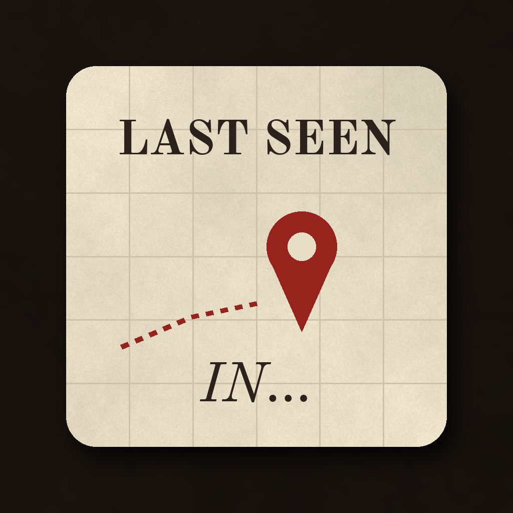

Short documentaries
Last Seen In
Last Seen In is a short-form documentary channel on YouTube and TikTok. Each video opens with a real place and year, then tells one real unsolved or strange case in under a minute, using maps, documents and sound.
The "Last Seen In uploader" app publishes the channel's own videos to the channel's own YouTube and TikTok accounts. It does not post for anyone else and does not collect information about viewers.